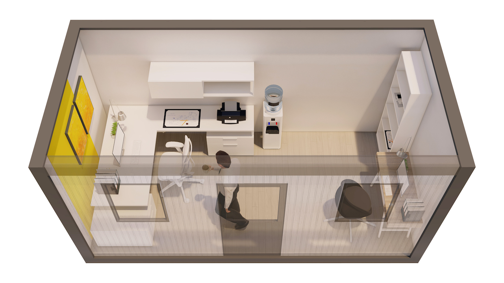

In contextul actual, in care nevoia de infrastructura medicala flexibila si rapida este tot mai evidenta, containerele medicale reprezinta o alternativa eficienta si adaptabila. Acestea ofera posibilitatea de a extinde sau crea unitati medicale in timp scurt, fara a compromite calitatea serviciilor oferite. Fie ca este vorba despre cabinete medicale, dispensare, laboratoare sau unitati de triaj, containerele medicale sunt solutii practice si economice.Containerele medicale sunt proiectate pentru a raspunde cerintelor specifice ale domeniului sanitar. Acestea sunt complet echipate si pot fi personalizate in functie de nevoile beneficiarului, asigurand un mediu sigur si igienic pentru pacienti si personalul medical. Prin utilizarea materialelor de inalta calitate si respectarea normelor sanitare in vigoare, aceste containere garanteaza durabilitate si functionalitate.
In contextul actual, in care nevoia de infrastructura medicala flexibila si rapida este tot mai evidenta, containerele medicale reprezinta o alternativa eficienta si adaptabila. Acestea ofera posibilitatea de a extinde sau crea unitati medicale in timp scurt, fara a compromite calitatea serviciilor oferite. Fie ca este vorba despre cabinete medicale, dispensare, laboratoare sau unitati de triaj, containerele medicale sunt solutii practice si economice.
Contactați-ne pentru o ofertă detaliată adaptată nevoilor dumneavoastră.
Cere Oferta Acum